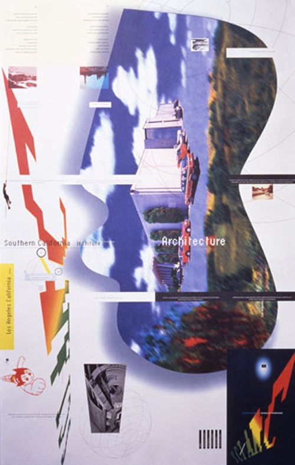

When I was very young, my mother took me for walks in Humboldt Park, along the edge of the Prairie River. I have vague memories, like impressions on glass plates, of an old boathouse, a circular band shell, an arched stone bridge. The narrows of the river emptied into a wide lagoon and I saw upon its surface a singular miracle. A long curving neck rose from a dress of white plumage.
Quand j'étais très jeune, ma mère m'a fait faire des promenades dans le parc Humboldt, le long de la lisière de la rivière Prayrie. J’AI VAGUE MEMORIES, COMME DES IMPRESSIONS SUR DES PLAQUES DE VERRE, D’UN VIEUX BATEAU, UN BAND SHELL CIRCULAIRE, UN PONT EN PIERRE ARCHÉ. Les profondeurs de la rivière se sont transformées en une vaste lagune et j'ai vu sur sa surface un miracle singulier. Un long cou galbé est passé d'une robe de plumage blanc.
Previous